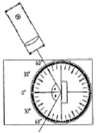
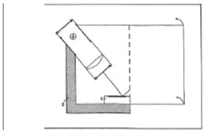

| Objetivo: |
Estudiar si hay relación entre la dirección del haz de luz que incide en un espejo plano y la dirección del haz reflejado
Estudiar como colocarías una hoja de papel para ver en toda su longitud el haz reflejado.
|
|
| Introducción: |
|
Cuando un rayo de luz que se propaga a través de un medio homogéneo encuentra en su camino una superficie bien pulida, se
refleja en ella siguiendo una serie de leyes. Este fenómeno es conocido como reflexión regular o especular. Algunos metales como
la plata y el aluminio absorben poco la luz blanca y si construimos con ellos láminas metálicas muy pulimentadas podemos lograr
que reflejen la luz de tal manera que los rayos reflejados se vean con una intensidad comparable a la de los rayos incidentes. A
estas superficies les llamamos espejos y pueden ser planos o curvos. Hoy en día los espejos se construyen de vidrio, pero en la
antigüedad los primeros espejos eran de metal.
|
|
|
| Desarrollo Experimental: |
|
Experimento 1:
Dirección de los haces de luz incidente y reflejado
Coloca el disco graduado, llamado “disco óptico”, sobre la hoja de papel, como se indica en la figura 1).
Escribe 0º en la hoja, junto a la línea horizontal, y marca sobre esta hoja también otros ángulos (figura 1).
Coloca el espejo plano en el centro del disco, exactamente sobre la línea vertical.
Coloca el diafragma de un rendija en la caja luminosa, en el lado de la lente.
Conecta la caja luminosa a la fuente de alimentación (12V-).
Coloca la caja luminosa de forma que el haz de luz estrecho incida en el espejo exactamente con un ángulo a de 60º (figura 1).Cuida que el haz de luz de la caja luminosa incida exactamente en el punto de intersección de las líneas del disco óptico.
Lee el ángulo del haz de luz reflejado.
Este es el ángulo ß (ángulo de reflexión) entre la línea 0° (llamada normal al plano de incidencia) y el haz reflejado; mira
también la figura 1.
Anota su valor en la tabla 1; repite este experimento con todos los ángulos de incidencia a dados en la tabla, y otros tres
ángulos a tu elección. Anota todos los valores medidos en la tabla.
Haz finalmente incidir la luz a lo largo de la línea 0° (la normal al plano de incidencia). Observa el haz reflejado; ¿qué valor
tiene ahora el ángulo ß? Anótalo también en la tabla.
Desconecta la fuente de alimentación.
Experimento 2:
Posición de los haces de luz incidente y reflejado
Cambia el montaje del experimento (conforme a la Figura 2). Para esto dobla una hoja de papel por la mitad y colócala sobre un libro grueso, de modo que el doblez coincida con el borde del libro. El espejo está en la parte inferior de la hoja, coincidiendo con el doblez y el borde del libro.
Conecta de nuevo la caja luminosa (con el diafragma de una rendija en el lado de la lente) a la fuente de alimentación (12V), y
colócala sobre la hoja de papel y el libro, como en la figura 2.
Haz que incida oblicuamente sobre el espejo un haz de luz estrecho, de modo que el punto de incidencia sobre el espejo esté unos 2 cm. delante del doblez de la hoja (figura 2).
Observa el haz de luz reflejado. Mueve la otra mitad de la hoja con cuidado hacia arriba (hasta 90°) y hacia abajo, sin que el espejo se mueva.
¿Qué observas con respecto a la visibilidad de toda la longitud del haz de luz reflejado en esta mitad de la hoja de papel?.
Anota tus observaciones, desconecta la fuente de alimentación y quita la caja luminosa del papel.
|
| Resultados y Conclusiones: |
|
Dirección de los haces de luz incidente y reflejado.
Posición de los haces de luz incidente y reflejado:
1) Visibilidad del haz reflejado: papel horizontal
2) Mitad de la hoja levantada
3) Mitad de la hoja bajada
De los resultados obtenidos:
1) Compara los valores de los ángulos de reflexión ß de la tabla 1 con los ángulos de incidencia a. ¿Qué puedes comprobar?
Formula un enunciado.
2) ¿Cómo se refleja un haz que incide sobre el espejo sobre la línea 0º (la normal al plano de incidencia)? ¿Cuáles son, en este
caso, los ángulos de incidencia a y de reflexión ß?
3) ¿En qué posición del papel (2ª parte del experimento) se ve el haz de luz reflejado con la mayor claridad y en toda su longitud?
4) ¿Qué conclusión puedes sacar de esto, sobre la posición relativa de los haces de luz incidente y reflejado (y la normal al plano de
incidencia)?
5) ¿Por qué se puede ver con un espejo detrás de una esquina?
6) ¿En qué momento del día y en qué posición del sol se ve brillar la ventana de un edificio lejano, y por qué no en otro momento?.
|
|
|
| Figura 1 |
|  |
| |
| Figura 2 |
|  |
| |
|